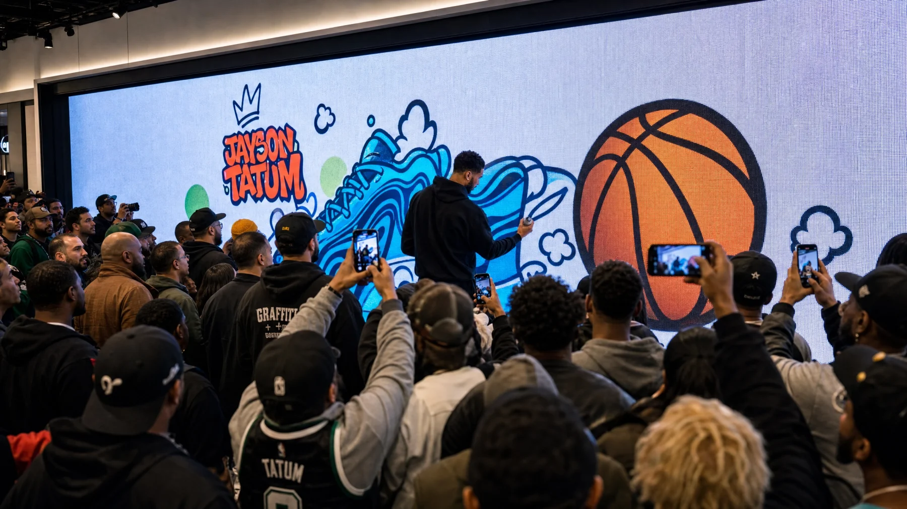
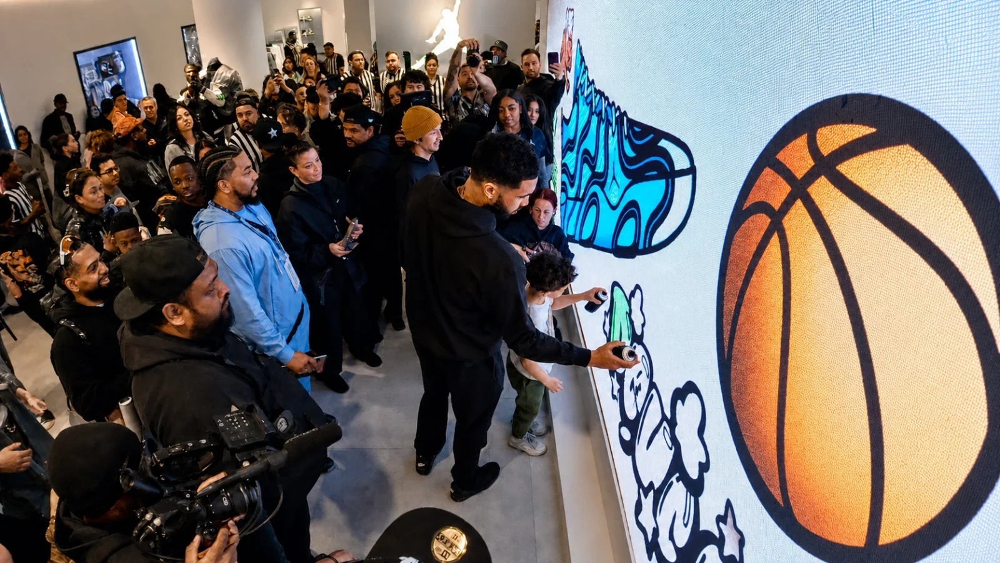

Jordan Brand.
Unbannable Air.
The wall went off.
- Dates
- February 13–16, 2025
- Location
- 150 Powell Street
Union Square, San Francisco - Event
- Foot Locker × Jordan Brand
NBA All-Star Weekend 2025
"Unbannable Air" - Setup
- LED wall + AR projection onto 3D basketball & sneaker
Two stories of sneaker drops on Powell Street, and one LED wall built for spray cans.
NBA All-Star Weekend landed in the Bay Area in February 2025. Foot Locker opened a two-story pop-up at 150 Powell Street in Union Square — four days of high-heat drops and brand activations from Nike, Jordan Brand, adidas, PUMA, Converse, Crocs and New Era. Jordan Brand's piece was "Unbannable Air": a vertical-jump challenge paired with an interactive graffiti wall. We ran the wall.
Guests grabbed a custom spray can, picked an Air Jordan stencil or sticker pack from the menu, and put their name on the wall. For the finish, their artwork projected onto a rotating 3D basketball — and then a 3D Jordan sneaker — built specifically for the activation. The whole loop moved through three formats without breaking stride: wall, object, take-home.
The floor already knew what it was into. Anthony Edwards, Jayson Tatum and Shai Gilgeous-Alexander rotated through across the weekend — and Tatum stepped up to the wall and tagged it himself, with the LED carrying his name as he painted. In between, it was sneakerheads and walk-in fans — real foot traffic, not invitees-on-a-list. The wall gave them a way to be part of the weekend instead of just standing in it.
Eighteen years. Six continents. One idea, done right.
For eighteen years, Graffiti+ has been putting real creative tools in people's hands — in public, at scale, and always with cultural integrity.
Born from the roots of graffiti culture and built for anyone willing to pick up a custom spray can, the platform transforms retail and brand spaces into shared canvases where guests paint together in real time. From their home in Vancouver to projects across six continents, Graffiti+ has partnered with Nike, Jordan Brand, Foot Locker, Louis Vuitton, Chanel, Hennessy, Samsung and Google to bring authentic, participatory experiences to audiences everywhere.
Powell Street walked in for the sneakers. They left having tagged the wall.

